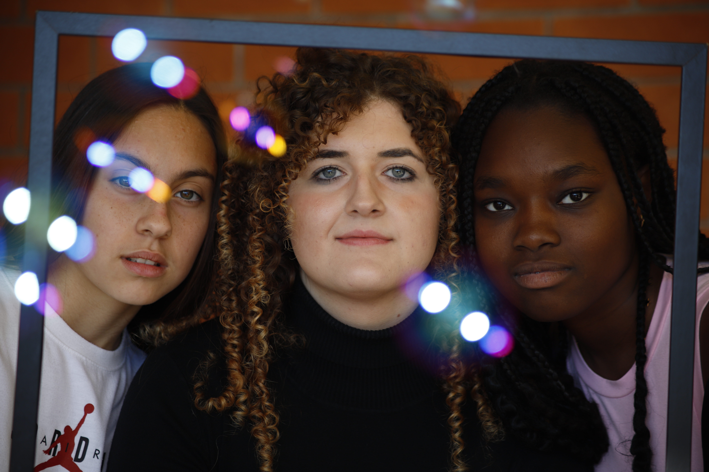
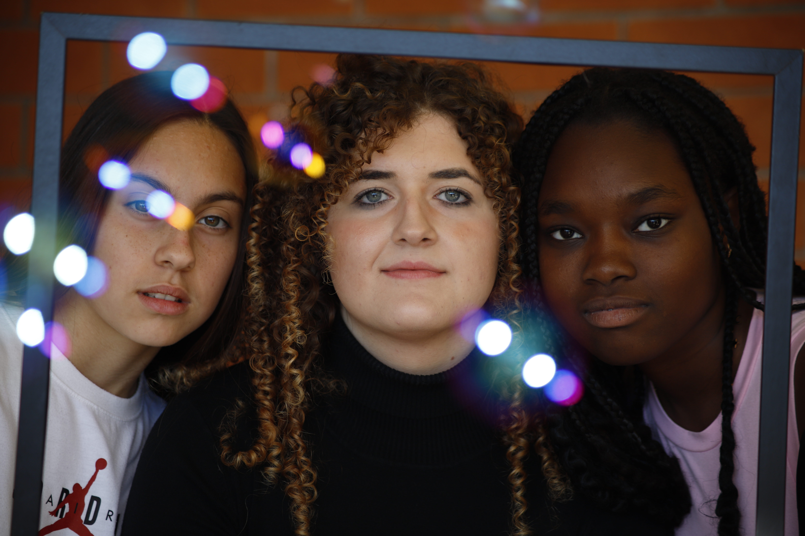

Lunedì 19 agosto 1839 è riconosciuto come il giorno in cui è nata la
fotografia, quando fu presentata ufficialmente a Parigi. La storia della
fotografia è strettamente legata all'evoluzione della camera oscura, che
dimostrò la possibilità di catturare e fissare un particolare momento in
un'immagine.
Le radici della camera oscura risalgono all'antichità, con la conoscenza
dei principi ottici che permettevano di osservare immagini invertite
attraverso un piccolo foro in una stanza oscurata. Tuttavia, è nel
Rinascimento che la camera oscura inizia ad essere utilizzata come
strumento artistico e scientifico, con artisti che sembrano aver
utilizzato dispositivi simili per ottenere prospettive accurate e
dettagliate nelle loro opere d'arte.
Nel corso dei secoli, numerosi studiosi e scienziati hanno contribuito
allo sviluppo e al perfezionamento della camera oscura.
Ma fu l'invenzione della camera oscura portatile nel XVII secolo a
rappresentare un passo significativo verso la nascita della fotografia.
Con l'avanzamento della tecnologia ottica e la comprensione dei processi
chimici, gli esperimenti per fissare le immagini proiettate dalla camera
oscura iniziarono a prendere forma.
L'invenzione della camera oscura portatile e l'intuizione delle
potenzialità di fissare permanentemente le immagini proiettate
rappresentano una svolta fondamentale nella storia della fotografia.
Successivamente, con l'evoluzione della tecnologia ottica e chimica, la
camera oscura si trasformò gradualmente in macchine fotografiche sempre
più sofisticate e accessibili, aprendo la strada alla nascita della
fotografia moderna.
In questo progetto la prof.ssa P. Gesini ha illustrato la storia della
fotografia e della macchina fotografica, com'è nata e dove, concentrandosi
anche sul periodo storico. Naturalmente, ha mostrato il funzionamento e
l'evoluzione della “macchina fotografica” fino ai giorni d'oggi, illustrando
le differenze che vi sono tra le macchinette digitali e quelle analogiche,
motivato dal principale piano di studi della nostra scuola: l'informatica.
Le lezioni hanno trattato diverse tematiche e tecniche fotografiche, e
parallelamente all'apprendimento delle basi della fotografia, i partecipanti
hanno potuto fare esperienze su diversi tipi di scatto e tecniche, come le
lunghe esposizioni, bokeh, panning e high speed photography. Nel corso non
sono mancate occasioni in cui gli studenti hanno potuto unire le foto, la natura
e il contesto storico; tra le molte esperienze dal vivo è possibile menzionare la
gita ai giardini di Ninfa.
Di seguito è possibile osservare alcune delle molte fotografie scattate
durante le vivaci lezioni del corso.

 
